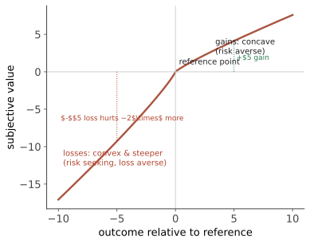

认知 IV · 思维、判断与决策
人类推理有系统性的偏差——不是随机出错，而是朝固定方向偏。Kahneman 与 Tversky 的启发式与偏差纲领因此拿下诺贝尔经济学奖，也重塑了经济学、医学决策与公共政策。本页给这套工具箱、它的复现状况，以及一条对你直接有用的线索：这些偏差正是预测工作要对抗的东西。
1. 双系统（先说清它的地位）
系统 1：快、自动、直觉、并行、耗能低；系统 2：慢、受控、分析、串行、费力。
【摇】关于"双系统"本身：它是极好的教学隐喻，但不应被当作脑中两个真实模块——当代认知科学更倾向连续统与多重加工的观点。Kahneman 本人在《思考，快与慢》再版语境中也承认书中部分章节（尤其涉及启动效应的部分）建立在后来复现失败的文献上。用它组织直觉，别用它当机制。
2. 启发式与偏差（分档呈现）
【稳】经受住复现的核心成员：
| 偏差 | 内容 | 现场 |
|---|---|---|
| 锚定 | 初始数字影响后续判断，即使明显无关 | 谈判首价、定价、量刑建议 |
| 可得性 | 容易想起的事被高估概率 | 空难 vs 车祸的恐惧倒挂；媒体报道塑造风险感 |
| 代表性 | 按"像不像典型"判断，忽视基率 | 基率忽视（🔗 数学站概率 I 的低基率陷阱）、赌徒谬误、合取谬误（Linda 问题：认为"女权银行出纳"比"银行出纳"更可能——违反概率公理） |
| 框架效应 | 同一事实的正负表述改变选择 | "存活率 90%" vs "死亡率 10%"；医患沟通与营销 |
| 损失厌恶 | 损失的痛约为等量收益之乐的 1.5–2.5 倍 | 禀赋效应、止损困难 |
| 确认偏差 | 优先搜索与解释支持既有信念的证据 | 信息茧房、科研 p-hacking（第 03 页）、投资中最贵的偏差 |
| 过度自信 / 校准差 | 主观 90% 置信区间只包含约 50% 真值 | 预测、工期估计（计划谬误） |
| 事后诸葛偏差 | 知道结果后觉得"早就知道" | 复盘失真、对决策者的不公评价 |
【摇/倒】需要打折的成员：多数社会行为启动（第 03 页）；自我损耗驱动的"决策疲劳"叙事（如"法官在午餐前后判决不同"的著名研究，后续分析指出案件排序等混杂因素可能解释大部分效应）；"选择过载"（果酱实验）在 meta 分析中平均效应接近零【摇→倒】。
3. 前景理论（决策的描述性模型）
期望效用理论说人该按 \(\sum p_i u(x_i)\) 最大化——但人不这么干。前景理论（Kahneman & Tversky 1979）三条修正：
- 参照点：人评价的是相对于参照点的变化而非绝对财富——参照点一变，同一结果从"赚"变"亏"；
- 价值函数：收益区凹（风险规避）、损失区凸（风险寻求——亏钱时更爱赌，解释了"死扛套牢"）、且损失侧更陡（损失厌恶）；
- 概率权重：小概率被高估（买彩票、买保险同时发生）、中大概率被低估。

🔗 与你的工作直接相关：投资中的处置效应、研报中的锚定与确认偏差、预测层的过度自信与校准问题——第 22 页会把这些整理成一份"预测者的偏差清单"；数学站统计线的校准（Brier 分数、可靠性图）是量化解药。
4. 推理、问题解决与专长
推理：演绎（Wason 四卡片任务：抽象版多数人做错、换成社会契约版（查酒吧年龄）正确率大增——内容效应【稳】）；归纳与因果推断（🔗 数学站统计线）。
问题解决的障碍：功能固着、心向定势、错误的问题表征（多数难题的难在表征而非搜索）。专长的本质：不是"更聪明"而是更好的组块与模式识别（第 09 页）+ 长期刻意练习。【摇】"一万小时定律"：Ericsson 的原始研究讲的是刻意练习（有反馈、有挑战、有指导）而非单纯时长；meta 分析显示刻意练习解释的绩效方差在不同领域差异极大（游戏/音乐较高、专业职业较低），畅销书版本严重简化。
5. 反直觉与实用
- 偏差不是"愚蠢"而是生态理性的副产品：在信息有限、时间紧迫的自然环境中，启发式通常又快又准（Gigerenzer 的"快而俭"纲领）——错的不是启发式，是把它用在了不匹配的环境；
- 知道偏差并不能消除偏差（"偏差盲点"：人人都觉得别人更有偏差）——有效的不是"注意点"，而是改变流程：预注册、检查清单、外部视角（参考类预测）、事前验尸（premortem）、强制考虑反面证据；
- 【稳】外部视角优于内部视角：估工期时"同类项目历史用了多久"比"我盘算的步骤加总"准得多——计划谬误的唯一可靠解药。
下一页：思维需要载体、也需要度量——语言与智力，本课争议密度最高的一页。